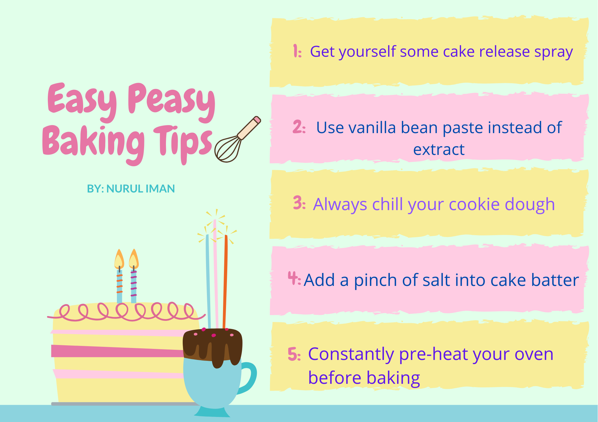

HOME
BIOGRAPHY
FEED
GALLERY
CONTACT
THE FEED
Flourless Chocolate Cake
Ingredients :
►200g unsalted butter
►200g 70% dark chocolate
►1 tablespoon strong coffee
►6 large free-range eggs
►250 g golden caster sugar
►70 g cocoa powder, plus for dusting
►Fresh berries for toppings
Method :
◾Pre heat the oven to 160ºC and grease the cake tin with butter.
◾Melt the chocolate then mix it with the coffee while it is still hot.
◾Combine melted chocolate mixture with the rest of ingredients except the berries.
◾Pour cake batter into the tin and transfer to oven for an hour.
◾Allow to cooling completely before serve with dusting of cocoa powder and fresh berries.
Downunder Berry Pavlova
Ingredients :
►600g ripe strawberries
►180g golden caster sugar
►200g 70% dark chocolate
►1 vanilla pod
►500ml double cream
►1 Woolworths chocolate-rippled pavlova base
►A handful of baby mint leaves
Method :
◾Add the cream along with 50g of sugar and vanilla then whip to soft peaks.
◾Cut the strawberries and left 30g remaining with 30g of sugar for marinate.
◾Stir in 100g of sugar with melted chocolate and left aside until cool.
◾Spoon soft peaks into the middle of a large serving board the cover with the strawberry.
◾Drizzle 3 spoons of the chocolate sauce and top with Pavlova base, peaks facing upwards.
◾Dollop the remaining cream onto the Pavlova, decorate with baby mint leaves.
Double Chocolate Cookies
Ingredients :
►50g unsalted butter
►200g 70% dark chocolate
►1 x 396g tin of condensed milk
►25g ground almonds
►2 heaped teaspoons Horlicks
►200g self-raising flour
►100g Maltesers
►50g quality white chocolate
Method :
◾Melt the butter and chocolate in a pan on a low heat until smooth and combined.
◾Melt the chocolate then mix it with the coffee while it is still hot.
◾Remove from the heat and stir in the condensed milk, followed by the almonds and Horlicks.
◾Sift in the flour and a pinch of sea salt, mix together, then chill in the fridge for 20 to 30 minutes (no longer).
◾Mix all the ingredient then divide the mixture into 24 equal-sized balls and bake it for 12 minutes to 170°C.

© Nurul Iman
2020
Credit: Jamie Oliver Limited